5.5. Advanced topics
5.5.5. How do you optimize a process?
5.5.5.1. Single response case
5.5.5.1.4. |
Single response: Optimization when there is adequate quadratic fit |
Steps to find optimal operating conditions
Example
- Uses a transformation of Y or the Xi's to improve the fit.
- Limits use of the model to a smaller region in which the model does fit.
- Adds other terms to the model.
Procedure: obtaining the estimated optimal operating conditions
Once a linear model exhibits lack of fit or when significant curvature
is detected, the experimental design used in Phase I (recall that a  factorial experiment was recommended) should be augmented with axial runs
on each factor to form what is called a central composite design. This
experimental design allows estimation of a second order polynomial of the
form
factorial experiment was recommended) should be augmented with axial runs
on each factor to form what is called a central composite design. This
experimental design allows estimation of a second order polynomial of the
form
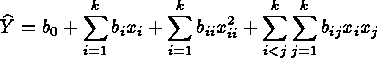
If the corresponding analysis of variance table indicates no lack of fit for this model, the engineer can proceed to determine the estimated optimal operating conditions.
- Using some graphics software, get a contour plot of the fitted response. If the number of factors (k) is greater than 2, then plot contours in all planes corresponding to all the possible pairs of factors. For k greater than, say, 5, this could be too cumbersome (unless the graphic software plots all pairs automatically). In such case a "canonical analysis'' of the surface is recommended (see Technical Appendix 5 D).
-
Use an optimization solver to maximize or minimize (as desired) the estimated
response
 .
. - Perform a confirmation experiment at the estimated optimal operating conditions given by the solver in step 2.
Example: Second Phase Optimization of Chemical Process.
Recall that in the chemical
experiment, the ANOVA table,
obtained from using an experiment run around the coordinates  ,
,  ,
indicated significant curvature effects. Augmenting the
,
indicated significant curvature effects. Augmenting the  factorial experiment with axial runs at
factorial experiment with axial runs at
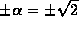
to achieve a rotatable central composite experimental design, the following experimental results were obtained: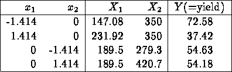
The corresponding ANOVA table for the different effects, based on the sequential sum of squares procedure of the DESIGN EXPERT software, gives
SUM OF MEAN F SOURCE SQUARES DF SQUARE VALUE PROB > F MEAN 51418.2 1 51418.2 Linear 1113.7 2 556.8 5.56 0.024 Quadratic 768.1 3 256.0 7.69 0.013 Cubic 9.9 2 5.0 0.11 0.897
RESIDUAL 223.1 5 44.6 TOTAL 53533.0 13From the table, the linear and quadratic effects are significant. The lack of fit tests and auxiliary diagnostic statistics are:
SUM OF MEAN F MODEL SQUARES DF SQUARE VALUE PROB > F Linear 827.9 6 138.0 3.19 0.141 Quadratic 59.9 3 20.0 0.46 0.725 Cubic 49.9 1 49.9 1.15 0.343 PURE ERROR 173.2 4 43.3 ROOT ADJ PRED SOURCE MSE R-SQR R-SQR R-SQR PRESS Linear 10.01 0.5266 0.4319 0.2425 1602.02 Quadratic 5.77 0.8898 0.8111 0.6708 696.25 Cubic 6.68 0.8945 0.7468 -0.6393 3466.71The quadratic model has a larger p-value for the lack of fit test, higher adjusted R2, and a lower PRESS statistic, thus it should provide a reliable model. The fitted quadratic equation, in coded units, is

Step 1:
A contour plot of this function (Figure 5.5) shows that it appears to have a single optimum point in the region of the experiment (this optimum is calculated below to be (-.9285,.3472), in coded x1, x2 units, with a response value of 77.59).
FIGURE 5.5: Contour Plot of the Fitted Response in the Example
Since there are only two factors in this example, we can also get a
3D plot of the fitted response against the two factors (Figure 5.6).
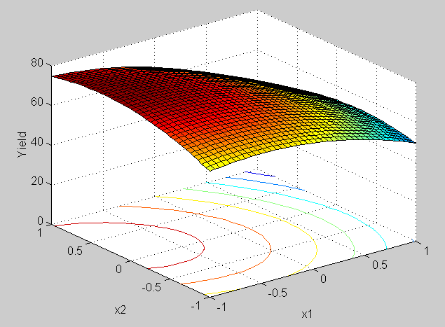
FIGURE 5.6: 3D Plot of the Fitted Response in the Example
Step 2:
The optimization routine in DESIGN EXPERT was invoked for maximizing  .
The results are
.
The results are
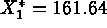
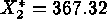
minutes. The estimated yield at the optimal point is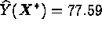
%.Step 3:
A confirmation experiment was conducted by the process engineer at settings
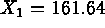
,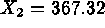
. The observed response was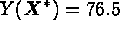
% which is satisfactorily close to the estimated optimum.======================================================================
Technical Appendix 5C: Finding the Factor Settings for the Stationary Point of a Quadratic Response.
- Rewrite the fitted equation using matrix notation as
-
Equating the partial derivatives of
 with respect to
with respect to  to
zeroes, the coordinates of the stationary point of the response are given
by
to
zeroes, the coordinates of the stationary point of the response are given
by
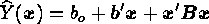
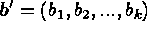
is a vector of first order parameter estimates,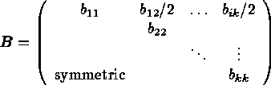
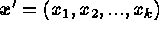
is the vector of controllable factors. Notice that the off diagonal elements of are equal to half
the two-factor interaction coefficients.
are equal to half
the two-factor interaction coefficients.
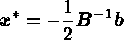
 .
The two-factor interactions do not, in general, let us "see'' what type
of point
.
The two-factor interactions do not, in general, let us "see'' what type
of point  is. One
thing that can be said is that if the diagonal elements of
is. One
thing that can be said is that if the diagonal elements of 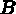
(the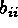
) have mixed signs, is
a saddle point. Otherwise, it is necessary to look at the characteristic
roots or eigenvalues of
is
a saddle point. Otherwise, it is necessary to look at the characteristic
roots or eigenvalues of  to see whether
to see whether  is
"positive definite'' (so
is
"positive definite'' (so  is a point of minimum response) or "negative definite'' (the case where
is a point of minimum response) or "negative definite'' (the case where  is a point of minimum response). This task is easier if the two-factor
interactions are "eliminated'' from the fitted equation as is described
in Technical Appendix 5D..
is a point of minimum response). This task is easier if the two-factor
interactions are "eliminated'' from the fitted equation as is described
in Technical Appendix 5D..
Example: computing the stationary point, Chemical Process experiment.
The fitted quadratic equation in the chemical experiment discussed in Section 5.5.5.1.1, in coded units, is
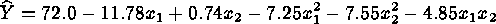
from which we obtain
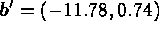
,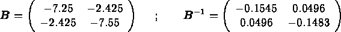
and
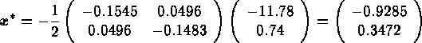
Transforming back to the original units of measurement, the coordinates of the stationary point are
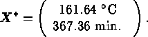
Notice this is the same solution as obtained by using the optimization
routine of DESIGN EXPERT (see section 5.5.5.1.1).
The predicted response at the stationary point is  %.
%.
Technical Appendix 5D: "Canonical Analysis'' of Quadratic Responses.
Whether the stationary point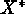
represents a point of maximum or minimum response, or just a saddle point, is determined by the matrix of second order coefficients, .
In the simpler case of just a single controllable factor (k=1),
.
In the simpler case of just a single controllable factor (k=1),  is a scalar proportional to the second derivative of
is a scalar proportional to the second derivative of 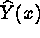
with respect to x. If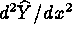
is positive, recall that from calculus the function is convex ("bowl shaped'') and then
is convex ("bowl shaped'') and then  is a point of maximum response.
is a point of maximum response.
Unfortunately, the multiple factor case (k>1) is not so easy
since the two factor interactions (the off diagonal elements of  )
obscure the picture of what is going on. A recommended procedure for analyzing
whether
)
obscure the picture of what is going on. A recommended procedure for analyzing
whether  is "positive
definite'' (we have a min.) or "negative definite'' (we have a max.) is
to rotate the axis
is "positive
definite'' (we have a min.) or "negative definite'' (we have a max.) is
to rotate the axis
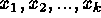
so that the two factor interactions disappear. It is also customary (Box and Draper, 1987; Khuri and Cornell, 1987; Myers and Montgomery, 1995) to translate the origin of coordinates to the stationary point, so that the intercept terms are eliminated from the equation of .
This procedure is called the canonical analysis of
.
This procedure is called the canonical analysis of 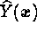
.Procedure: Canonical Analysis
-
Define new axis
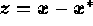
(translation step). The fitted equation becomes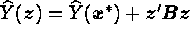
. -
Define new axis
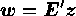
, where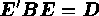
and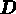
is a diagonal matrix to be defined (rotation step). The fitted equation becomes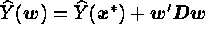
. This is the so-called canonical form of the model. The elements on the diagonal of ,
, 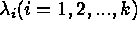
are the eigenvalues of .
The columns of
.
The columns of 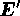
, ,
are the orthonormal eigenvectors of
,
are the orthonormal eigenvectors of  ,
which means that the
,
which means that the  satisfy
satisfy  ,
, 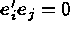
for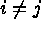
, and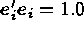
. -
If all the
 are negative,
are negative,  corresponds to a point of minimum response. If all
corresponds to a point of minimum response. If all  are positive,
are positive,  corresponds
to a point of maximum response. Finally, if the
corresponds
to a point of maximum response. Finally, if the  are of mixed signs, the response is a saddle function and
are of mixed signs, the response is a saddle function and  is the saddle point.
is the saddle point.
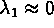
, the fitted ellipsoid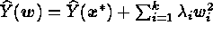
is elongated (i.e., it is flat) along the direction of the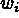
axis. Points along the axis will have an estimated response close to optimal, thus the process
engineer has flexibility in choosing "good'' operating conditions. If two
eigenvalues (say
axis will have an estimated response close to optimal, thus the process
engineer has flexibility in choosing "good'' operating conditions. If two
eigenvalues (say 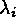
and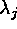
) are close to zero, then a plane in the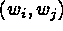
coordinates will have close to optimal operating conditions, etc.It is nice to know that the SAS software (PROC RSREG) computes the eigenvalues  and the orthonormal eigenvectors
and the orthonormal eigenvectors
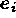
, thus there is no need to do a canonical analysis by hand.Example: Canonical Analysis of Yield Response in Chemical Experiment using SAS.
Let us return to the chemical experiment example in section 5.5.5.1.1. This will serve us for illustration of the method, but keep in mind that when the number of factors is small (e.g., k=2 as in this example) canonical analysis is not recommended in practice since simple contour plotting will provide sufficient information. The fitted equation of the model yields
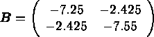
To compute the eigenvalues  ,
we have to find all roots of the expression that results from equating
the determinant of
,
we have to find all roots of the expression that results from equating
the determinant of
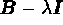
to zero. Since is
symmetric and has real coefficients, there will be k real roots
is
symmetric and has real coefficients, there will be k real roots 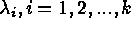
. To find the orthonormal eigenvectors, solve the simultaneous equations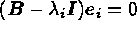
and . This is the hard way, of course. These computations are easily done using the SAS software PROC RSREG. The SAS program applied to our example is:data; input x1 x2 y; cards; -1 -1 64.33 1 -1 51.78 -1 1 77.30 1 1 45.37 0 0 62.08 0 0 79.36 0 0 75.29 0 0 73.81 0 0 69.45 -1.414 0 72.58 1.414 0 37.42 0 -1.414 54.63 0 1.414 54.18 ; proc rsreg; model y=x1 x2 /nocode/lackfit; run;The "nocode'' option was entered since the factors were already input in coded form. The corresponding output from SAS canonical analysis is as follows:
Canonical Analysis of Response Surface Critical Factor Value X1 -0.927852 X2 0.346800 Predicted value at stationary point 77.589146 Canonical Analysis of Response Surface Eigenvectors Eigenvalues X1 X2 -4.973187 0.728460 -0.685089 -9.827317 0.685089 0.728460 Stationary point is a maximum.Notice that the eigenvalues are the two roots of
. As mentioned in section
5.5.5.1.4,
the stationary point is
which corresponds to .
Since both eigenvalues are negative,  is a point of maximum response. To get the directions of the axis of the
fitted ellipsoid, compute
is a point of maximum response. To get the directions of the axis of the
fitted ellipsoid, compute
and
Since , there
is somewhat more elongation in the
direction. However, since both eigenvalues are quite far from zero, there
is not much flexibility in choosing operating conditions. It can be seen
from Figure 5.5 that the fitted ellipses do not have a great elongation
in the  direction,
the direction of the major axis. It is important to emphasize that confirmation
experiments at should
be performed to check the validity of the estimated optimal solution.
direction,
the direction of the major axis. It is important to emphasize that confirmation
experiments at should
be performed to check the validity of the estimated optimal solution.